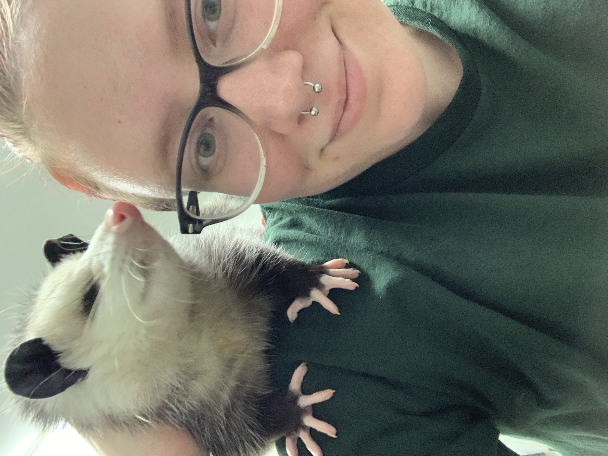

Hello! I'm Victoria Carbone, and this is the homepage for my CITW160 class. I am an aspiring wildlife rehabilitator, and I have my Master's in Wildlife Conservation and Advocacy. The picture above is me with an opossum named Zero, who was brought into a wildlife rehabilitation clinic as a baby. He was born with no eyes, and was therefore unable to be released back into the wild. Instead, he became a very spoiled ambassador for his species!
I decided to go back to school to get an assocaite for Geospatial Science, as I have recently discovered a passion for programming and wanted to combine this with my other passions of conservation and art. I'm looking forward to learning as much as I can!
As I complete each week's exercise, you'll find it linked below.
Exercises
- Exercise 2: Simple Web Page
- Exercise 3: Styling with CSS
- Exercise 4: Working with Images
- Exercise 5: Final Project Kickoff
- Exercise 6: BOX Model and Floats
- Exercise 7: Flexbox Layouts
- Exercise 8: Grid Layouts
- Exercise 9: Responsive Web Design
- Exercise 10: CSS Variables
- Exercise 11: Image Optimization
- Exercise 12: Accessibility and Usability
- Final Project